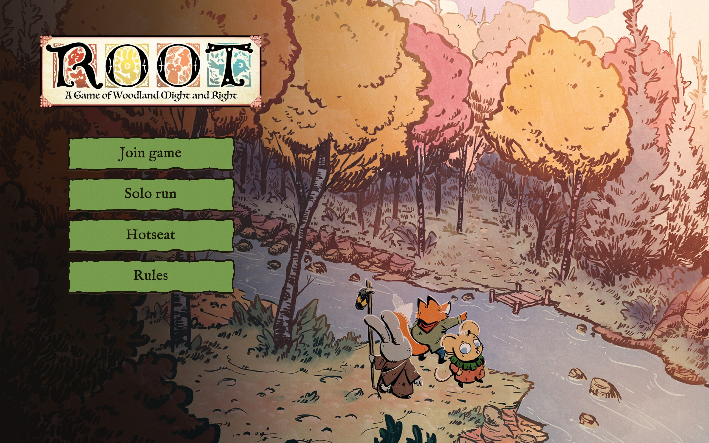
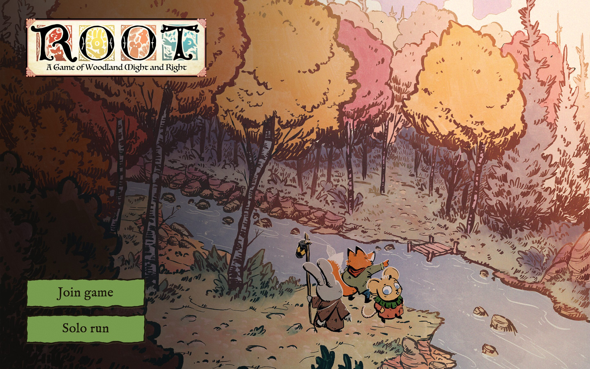
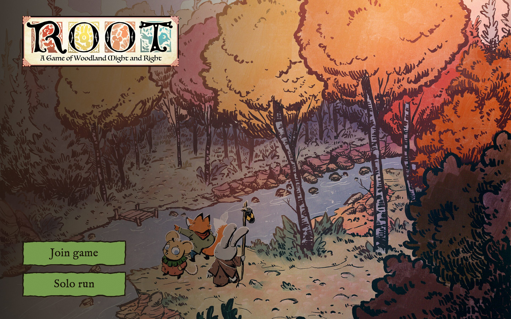
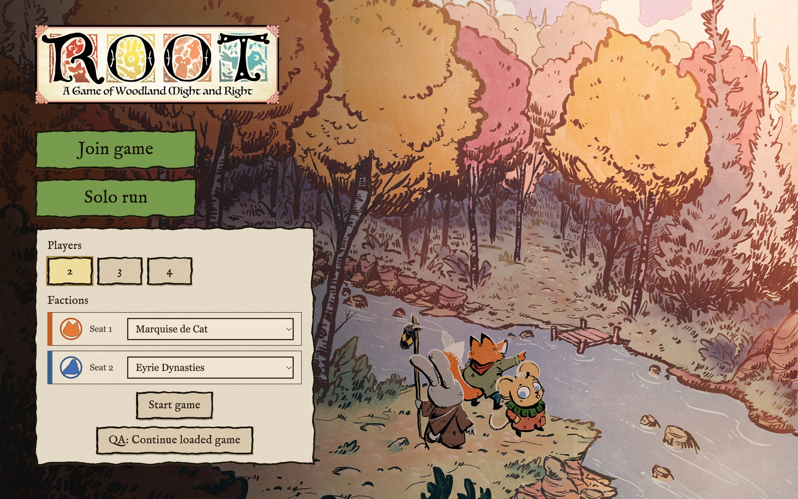
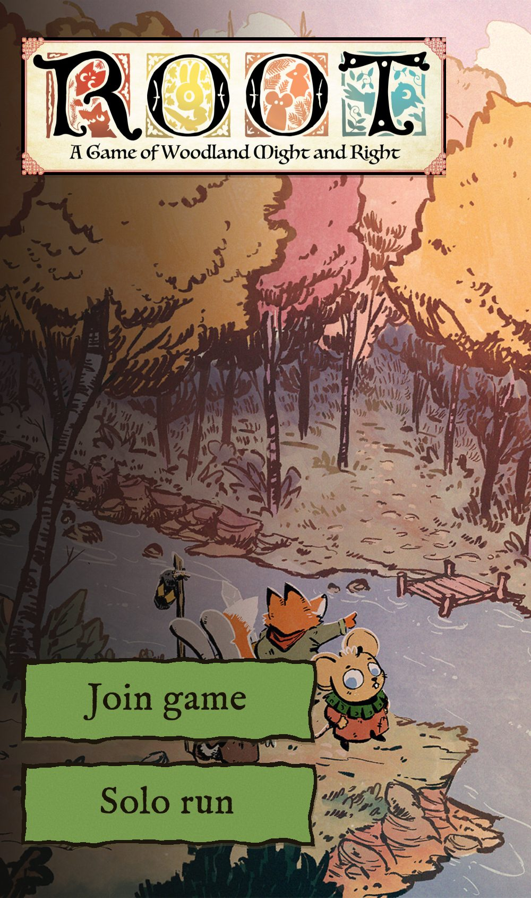

The start menu (the first screen when the app opens) with Ulrick Wery's Root fan art as the wallpaper. The banner sits top left, the play modes are on the left, and a dark gradient fades from left to right. These are screenshots of the real menu with the styles injected, at 1440×900 unless noted.

E. Column under the banner closest to referenceLaid out like Northgard: buttons of equal width stacked right under the banner. Hotseat and Rules are placeholder buttons.

B. Flipped, buttons bottom leftThe dark bush ends up behind the UI and the three heroes move to the right.

A. Original orientationThe heroes sit right next to the buttons and the bright trees pull your eye to the right.

C. Flipped, dev buildThe current hotseat/QA panel in the left column.

D. Phone 390×844The art is cropped toward the heroes and the banner spans the width.